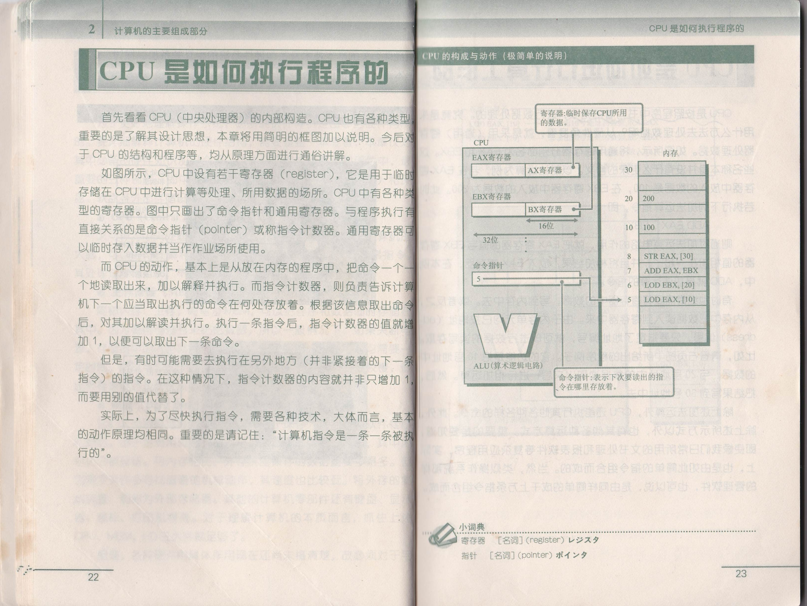
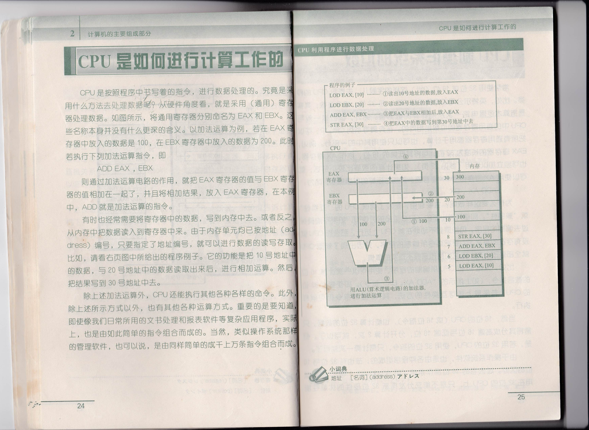
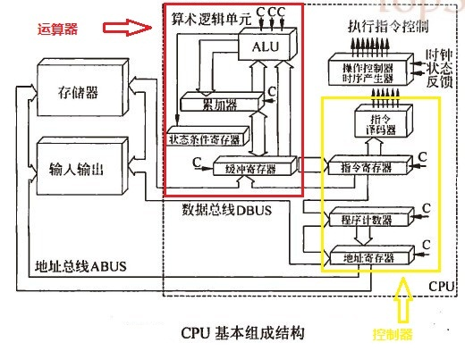
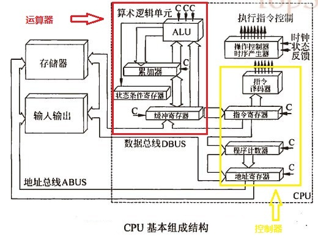
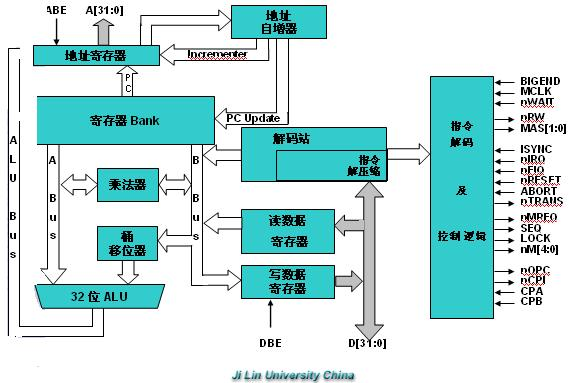
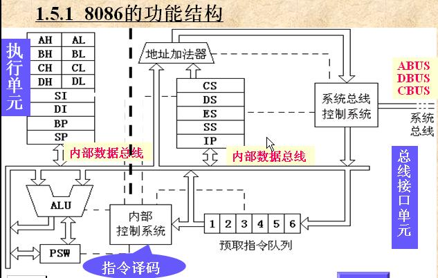

存储程序和自动执行程序是计算机工作的基本原理
S1:存储程序－通过输入设备，把程序载入到存储器中临时存储起来；
S2:取得指令－控制器从存储器中放置程序的位置拿出一条 程序指令；
S3:解析指令－控制器对拿到的程序指令进行分析和解释，确定指令的含义和具体工作任务，然后产生与该任务对应的控制信息，发送给相应部件。
譬如，如果任务是做两个数的加法，则 发送控制信息指挥运算器从存储器中取出参与运算的两个数，进行加法运算；
S4:执行指令－各个部件收到控制命令后，执行对应的任务。
譬如，运算器收到加法控制命令和参与运算的两个数，就执行加法运算，运算产生的结果数据传送到存储器中临时保存起来。
到这里只是执行完成了程序的一条指令，接下来，控制器按顺序取得下一条程序指令，解析指令，然后各部件执行指令...如此循环往复持续不断，直到程序结束。
控制器
1 指令寄存器IR(Instruction Register)
2 程序计数器PC(Program Counter)
3 操作控制器OC(Operation Controler)
指令寄存器的本质是存储部件，寄存器就是一个临时存储介质。计算机将当前执行或者即将执行的指令存储在该寄存器中；
程序计数器也称为指令计数器，是用来保存下一步将要执行指令的位置，所以通过该寄存器保存的地址就可以方便地将一步要执行的指令从内存中取出，放到指令寄存器中；
操作控制寄存器负责将指令进行译码，产生相应的控制信号，控制其他部件有序地运行。因为计算机只能看懂"0","1"组成的语言，需要将指令转换为机器语言，而这个寄存器就要实现该功能；
运算器
1 算术逻辑单元
2 累加器
3 状态寄存器
4 通用寄存器
CPU是如何执行程序的

cpu是如何进行计算工作的

访问存储器
机器语言可以被看作一种约定的形式，用处理器和寄存器来操控内存。
为了读出程序、处理数据等，必须要在CPU与内存之间进行数据的传送。数据是利用称为数据总线（data bus）的传输途径进行交换的。所谓总线(bus)，就是计算机主板上的某种传输线路。总线的宽度（即传输线的条数），会因CPU而各异。比如，对于32位总线而言，每次可以交换32位的数据。但需要注意的是，总线位数并不是CPU的位数，而是指传输数据时的位数。例如，英特尔公司的奔腾系列为32位的CPU，其数据总线的宽度为64位。总线是与从CPU芯片里面引出来的，一根一根针（pin）脚相对应的。如果能对照CPU芯片或计算机主板的实物，找到称为总线的传输线路，对总线的概念，就会有感觉了。
此外，为了从内在读出数据，或者将数据写入内存，就必须要指定读出的位置和写入的位置。因此，内存中的每个字节（Byte）都被分配了相应的编号（当然不一定都要以字节为单位，也有采用别的单位进行编号的），这种编号就称为地址（address）。当要访问内存时，就需要从CPU传送出指定地址的电信号。这种信号也是通过总线进行传送的，但它与传送数据所用的总线（数据总线）不同，是由地址总线的位数所决定的。
比如，若地址总线只有16条（即16位总线），其所能存取访问的地址是，从0000 0000 0000 0000地址到1111 1111 1111 1111地址为止，只有65636个单元。现在市场上的奔腾系列CPU，其地址总线有32根。它可以直接访问的内在单元为232＝4GB（约40亿个字节）。

| 层次 | 语言 | 解释器或翻译器 | 用语言写的程序 | 编译或翻译后的程序 |
| 高级语言 | a | 用b写 | 用a写 | 可以在n-1层的虚拟机上执行 |
| n-1 | b | |||
| 操作系统 | ||||
| ... | ||||
| 汇编语言 | ||||
| 机器语言 |
CPU内寄存器的位数一般等于CPU的位数
计算机基于固定的硬件平台，能够执行固定的指令集。同时，这些指令能够被当成构件模块，组成任意的程序。
PC(程序计数器)芯片的输出端被连接到ROM芯片的地址输入端.
CPU和操作系统的位数
常常使用32位或16位（bit）这样的字眼儿，去表示CPU的种类。比如，英特尔公司的奔腾系列CPU，是32位。这个位数，其实是指算术逻辑电路一次所能计算的数据量。在奔腾等系列的CPU中，可以把所有通用器都用于计算，也可以只使用其中的一部分。例如，EAX寄存器的长度为32位，可将其低端的16位，称作AX寄存器，也可以独立加以应用，如果计算的数值比较小的话，就可以使用AX寄存器与BX寄存器。其加法运算的程序指令，则为：
ADD AX，BX
为什么要这样做呢？主要理由，是为了确保CPU的“互换性”或“兼容性”。即使开发出新的（位数更多的）CPU，如果不能确保过去编制的程序，仍能原封不动地在新CPU上运行，那么新CPU就没有存在的意义了。要把迄今所编制的程序，只因出现了新型CPU就全部修改一遍，无论如何也是很不现实的事情。
比如，采用16位的CPU（或16位指令），也能计算32位的数据。只需将其分成高端16位与低端16位，分开计算2次，就可以了。但量，若用32位的CPU，使用32位的指令，只需计算一次就行了。
由于操作系统软件，也是由各种程序组成的，也有32位与16位的区分。过去老的16位操作系统（如windows3.1等），也可以用在32位的CPU上，只是不能充分发挥新32位硬件的优越性能而已。
存储芯片的片选
CPU要实现对存储单元的访问，首先要选择存储芯片，即进行片选；然后再从选中的芯片中依地址码选择出相应的存储单元，以进行数据的存取，这称为字选。片内的字选是由CPU送出的N条低位地址线完成的，地址线直接接到所有存储芯片的地址输入端，而存储芯片的片选信号则大多是通过高位地址译码后产生的。

线选法：
线选法就是用除片内寻址外的高位地址线直接分别接至各个存储芯片的片选端，当某地址线信息为0时，就选中与之对应的存储芯片。这些片选地址线每次寻址时只能有一位有效，不允许同时有多位有效，这样才能保证每次只选中一个芯片。线选法不能充分利用系统的存储器空间，把地址空间分成了相互隔离的区域，给编程带来了一定困难
全译码法：
全译码法将除片内寻址外的全部高位地址线都作为地址译码器的输入，译码器的输出作为各芯片的片选信号，将它们分别接到存储芯片的片选端，以实现对存储芯片的选择。全译码法的优点是每片芯片的地址范围是唯一确定的，而且是连续的，也便于扩展，不会产生地址重叠的存储区，但全译码法对译码电路要求较高
部分译码法：所谓部分译码法即用除片内寻址外的高位地址的一部分来译码产生片选信号，部分译码法会产生地址重叠。
CPU与主存储器的连接
主存与CPU之间的硬连接：主存与CPU的硬连接有三组连线：地址总线（AB）、数据总线（DB）和控制总线（CB）。把主存看作一个黑盒子，存储器地址寄存器（MAR）和存储器数据寄存器（MDR）是主存和CPU之间的接口。MAR可以接收由程序计数器（PC）的指令地址或来自运算器的操作数的地址，以确定要访问的单元。MDR是向主存写入数据或从主存读出数据的缓冲部件。MAR和MDR从功能上看属于主存，但通常放在CPU内。
 


CPU对主存的基本操作：CPU对主存进行读写操作时，首先CPU在地址总线上给出地址信号，然后发出相应的读写命令，并在数据总线上交换信息。读写基本操作如下：
读：读操作是指从CPU送来的地址所指定的存储单元中取出信息，再送给CPU，其操作过程如下：
地址——>MAR——ABCPU将地址信号送至地址总线
ReadCPU发读命令
WaitForMFC等待存储器工作完成信号
M(MAR)——>DB——>MDR读出信息经数据总线至CPU
写：写操作是指将要写入的信息存入CPU所指定的存储单元中，其操作过程是：
地址——>MAR——>ABCPU将地址信号送至地址总线
数据——>MDR——>DBCPU将要写入的数据送至数据总线
WriteCPU发写命令
WaitForMFC等待存储器工作完成信号
CPU与主存之间的速度匹配：同步存储器读取和异步存储器读取。
异步存储器读取：CPU和主存间没有统一的时钟，由主存工作完成信号（MFC）通知CPU“主存工作已完成”
同步存储器读取：CPU和主存采用统一时钟，同步工作，因为主存速度较慢，所以CPU与之配合必须放慢速度，在这种存储器中，不需要主存工作完成信号。
中央处理器
中央处理器（英文Central Processing Unit，CPU）是一台计算机的运算核心和控制核心。CPU、内部存储器和输入/输出设备是电子计算机三大核心部件。其功能主要是解释计算机指令以及处理计算机软件中的数据。CPU由运算器、控制器和寄存器及实现它们之间联系的数据、控制及状态的总线构成。差不多所有的CPU的运作原理可分为四个阶段：提取（Fetch）、解码（Decode）、执行（Execute）和写回（Writeback）。 CPU从存储器或高速缓冲存储器中取出指令，放入指令寄存器，并对指令译码，并执行指令。所谓的计算机的可编程性主要是指对CPU的编程。
目录
 在现今的中央处理器出现之前，如同ENIAC之类的计算机在执行不同程序时，必须经过一番线路调整才能启动。由于它们的线路必须被重设才能执行不同的程序，这些机器通常称为“固定程序计算机”（fixed-program computer）。而由于中央处理器这个词指称为执行软件（计算机程序）的装置，那些最早与储存程序型计算机一同登场的装置也可以被称为中央处理器。
计算机求解问题是通过执行程序来实现的。程序是由指令构成的序列，执行程序就是按指令序列逐条执行指令。一旦把程序装入主存储器（简称主存）中，就可以由CPU自动地完成从主存取指令和执行指令的任务。

CPU具有以下4个方面的基本功能：
这是指控制程序中指令的执行顺序。程序中的各指令之间是有严格顺序的，必须严格按程序规定的顺序执行，才能保证计算机工作的正确性。
一条指令的功能往往是由计算机中的部件执行一序列的操作来实现的。CPU要根据指令的功能，产生相应的操作控制信号，发给相应的部件，从而控制这些部件按指令的要求进行动作。
时间控制就是对各种操作实施时间上的定时。在一条指令的执行过程中，在什么时间做什么操作均应受到严格的控制。只有这样，计算机才能有条不紊地自动工作。
即对数据进行算术运算和逻辑运算，或进行其他的信息处理。
CPU从存储器或高速缓冲存储器中取出指令，放入指令寄存器，并对指令译码。它把指令分解成一系列的微操作，然后发出各种控制命令，执行微操作系列，从而完成一条指令的执行。
指令是计算机规定执行操作的类型和操作数的基本命令。指令是由一个字节或者多个字节组成，其中包括操作码字段、一个或多个有关操作数地址的字段以及一些表征机器状态的状态字以及特征码。有的指令中也直接包含操作数本身。
第一阶段，提取，从存储器或高速缓冲存储器中检索指令（为数值或一系列数值）。由程序计数器（Program Counter）指定存储器的位置。(程序计数器保存供识别目前程序位置的数值。换言之，程序计数器记录了CPU在目前程序里的踪迹。)
提取指令之后，程序计数器根据指令长度增加存储器单元。指令的提取必须常常从相对较慢的存储器寻找，因此导致CPU等候指令的送入。这个问题主要被论及在现代处理器的快取和管线化架构。
CPU根据存储器提取到的指令来决定其执行行为。在解码阶段，指令被拆解为有意义的片断。根据CPU的指令集架构（ISA）定义将数值解译为指令。一部分的指令数值为运算码（Opcode），其指示要进行哪些运算。其它的数值通常供给指令必要的信息，诸如一个加法（Addition）运算的运算目标。这样的运算目标也许提供一个常数值（即立即值），或是一个空间的定址值：暂存器或存储器位址，以定址模式决定。在旧的设计中，CPU里的指令解码部分是无法改变的硬件设备。不过在众多抽象且复杂的CPU和指令集架构中，一个微程序时常用来帮助转换指令为各种形态的讯号。这些微程序在已成品的CPU中往往可以重写，方便变更解码指令。
在提取和解码阶段之后，紧接着进入执行阶段。该阶段中，连接到各种能够进行所需运算的CPU部件。
例如，要求一个加法运算，算术逻辑单元（ALU，Arithmetic Logic Unit）将会连接到一组输入和一组输出。输入提供了要相加的数值，而输出将含有总和的结果。ALU内含电路系统，易于输出端完成简单的普通运算和逻辑运算（比如加法和位元运算）。如果加法运算产生一个对该CPU处理而言过大的结果，在标志暂存器里可能会设置运算溢出（Arithmetic Overflow）标志。
最终阶段，写回，以一定格式将执行阶段的结果简单的写回。运算结果经常被写进CPU内部的暂存器，以供随后指令快速存取。在其它案例中，运算结果可能写进速度较慢，但容量较大且较便宜的主记忆体中。某些类型的指令会操作程序计数器，而不直接产生结果。这些一般称作“跳转”（Jumps），并在程式中带来循环行为、条件性执行（透过条件跳转）和函式。许多指令会改变标志暂存器的状态位元。这些标志可用来影响程式行为，缘由于它们时常显出各种运算结果。例如，以一个“比较”指令判断两个值大小，根据比较结果在标志暂存器上设置一个数值。这个标志可藉由随后跳转指令来决定程式动向。在执行指令并写回结果之后，程序计数器值会递增，反覆整个过程，下一个指令周期正常的提取下一个顺序指令。如果完成的是跳转指令，程序计数器将会修改成跳转到的指令位址，且程序继续正常执行。许多复杂的CPU可以一次提取多个指令、解码，并且同时执行。这个部分一般涉及“经典RISC管线”，那些实际上是在众多使用简单CPU的电子装置中快速普及（常称为微控制（Microcontrollers））。
CPU包括运算逻辑部件、寄存器部件和控制部件等。
运算逻辑部件，可以执行定点或浮点算术运算操作、移位操作以及逻辑操作，也可执行地址运算和转换。
通用寄存器又可分定点数和浮点数两类，它们用来保存指令执行过程中临时存放的寄存器操作数和中间（或最终）的操作结果。
通用寄存器是中央处理器的重要组成部分，大多数指令都要访问到通用寄存器。通用寄存器的宽度决定计算机内部的数据通路宽度，其端口数目往往可影响内部操作的并行性。
专用寄存器是为了执行一些特殊操作所需用的寄存器。
控制寄存器通常用来指示机器执行的状态，或者保持某些指针，有处理状态寄存器、地址转换目录的基地址寄存器、特权状态寄存器、条件码寄存器、处理异常事故寄存器以及检错寄存器等。
有的时候，中央处理器中还有一些缓存，用来暂时存放一些数据指令，缓存越大，说明CPU的运算速度越快，目前市场上的中高端中央处理器都有2M左右的二级缓存，高端中央处理器有4M左右的二级缓存。
控制部件，主要是负责对指令译码，并且发出为完成每条指令所要执行的各个操作的控制信号。
其结构有两种：一种是以微存储为核心的微程序控制方式；一种是以逻辑硬布线结构为主的控制方式。
微存储中保持微码，每一个微码对应于一个最基本的微操作，又称微指令；各条指令是由不同序列的微码组成，这种微码序列构成微程序。中央处理器在对指令译码以后，即发出一定时序的控制信号，按给定序列的顺序以微周期为节拍执行由这些微码确定的若干个微操作，即可完成某条指令的执行。
简单指令是由（3～5）个微操作组成，复杂指令则要由几十个微操作甚至几百个微操作组成。
逻辑硬布线控制器则完全是由随机逻辑组成。指令译码后，控制器通过不同的逻辑门的组合，发出不同序列的控制时序信号，直接去执行一条指令中的各个操作。
计算机的发展主要表现在其核心部件——微处理器的发展上，每当一款新型的微处理器出现时，就会带动计算机系统的其他部件的相应发展，如计算机体系结构的进一步优化，存储器存取容量的不断增大、存取速度的不断提高，外围设备的不断改进以及新设备的不断出现等。
根据微处理器的字长和功能，可将其发展划分为以下几个阶段。
第1阶段（1971——1973年）是4位和8位低档微处理器时代，通常称为第1代，其典型产品是Intel4004和Intel8008微处理器和分别由它们组成的MCS-4和MCS-8微机。基本特点是采用PMOS工艺，集成度低（4000个晶体管/片），系统结构和指令系统都比较简单，主要采用机器语言或简单的汇编语言，指令数目较少（20多条指令），基本指令周期为20~50μs，用于简单的控制场合。
Intel在1969年为日本计算机制造商Busicom的一项专案，着手开发第一款微处理器，为一系列可程式化计算机研发多款晶片。最终，英特尔在1971年11月15日向全球市场推出4004微处理器，当年Intel 4004处理器每颗售价为200美元。4004 是英特尔第一款微处理器，为日后开发系统智能功能以及个人电脑奠定发展基础，其晶体管数目约为2300颗。
翌年，Intel推出8008微处理器，其运算威力是4004的两倍。Radio Electronics于1974年刊载一篇文章介绍一部采用8008的Mark-8装置，被公认是第一部家用电脑，在当时的标准来看，这部电脑在制造、维护、与运作方面都相当困难。Intel 8008晶体管数目约为3500颗。
第2阶段（1971——1977年）是8位中高档微处理器时代，通常称为第2代，其典型产品是Intel8080/8085、Motorola公司、Zilog公司的Z80等。它们的特点是采用NMOS工艺，集成度提高约4倍，运算速度提高约10~15倍（基本指令执行时间1~2μs），指令系统比较完善，具有典型的计算机体系结构和中断、DMA等控制功能。软件方面除了汇编语言外，还有BASIC、FORTRAN等高级语言和相应的解释程序和编译程序，在后期还出现了操作系统。
1974年，Intel推出8080处理器，并作为Altair个人电脑的运算核心，Altair在《星舰奇航》电视影集中是企业号太空船的目的地。电脑迷当时可用395美元买到一组Altair的套件。它在数个月内卖出数万套，成为史上第一款下订单后制造的机种。Intel 8080晶体管数目约为6千颗。
第3阶段（1978——1984年）是16位微处理器时代，通常称为第3代，其典型产品是Intel公司的8086/8088，Motorola公司的M68000，Zilog公司的Z8000等微处理器。其特点是采用HMOS工艺，集成度（20000~70000晶体管/片）和运算速度（基本指令执行时间是0.5μs）都比第2代提高了一个数量级。指令系统更加丰富、完善，采用多级中断、多种寻址方式、段式存储机构、硬件乘除部件，并配置了软件系统。这一时期著名微机产品有IBM公司的个人计算机。1981年IBM公司推出的个人计算机采用8088CPU。紧接着1982年又推出了扩展型的个人计算机IBM PC/XT，它对内存进行了扩充，并增加了一个硬磁盘驱动器。
80286（也被称为286）是英特尔首款能执行所有旧款处理器专属软件的处理器，这种软件相容性之后成为英特尔全系列微处理器的注册商标，在6年的销售期中，估计全球各地共安装了1500万部286个人电脑。Intel 80286处理器晶体管数目为13万4千颗。1984年，IBM公司推出了以80286处理器为核心组成的16位增强型个人计算机IBM PC/AT。由于IBM公司在发展个人计算机时采用 了技术开放的策略，使个人计算机风靡世界。
第4阶段（1985——1992年）是32位微处理器时代，又称为第4代。其典型产品是Intel公司的80386/80486，Motorola公司的M69030/68040等。其特点是采用HMOS或CMOS工艺，集成度高达100万个晶体管/片，具有32位地址线和32位数据总线。每秒钟可完成600万条指令（Million Instructions Per Second，MIPS）。微型计算机的功能已经达到甚至超过超级小型计算机，完全可以胜任多任务、多用户的作业。同期，其他一些微处理器生产厂商（如AMD、TEXAS等）也推出了80386/80486系列的芯片。 Intel 80386微处理器内含275,000 个晶体管—比当初的4004多了100倍以上，这款32位元处理器首次支持多工任务设计，能同时执行多个程序。Intel 80386晶体管数目约为27万5千颗。
Intel 80486处理器世代让电脑从命令列转型至点选式（point to click）的图形化操作环境，开始能以大幅加快的速度进行桌面排版作业。”Intel 80486处理器率先内建数学协同处理器，由于能扮演中央处理器处理复杂数学运算，因此能加快整体运算的速度。Intel 80486晶体管数目为120万颗。
第5阶段（1993-2005年）是奔腾（pentium）系列微处理器时代，通常称为第5代。典型产品是Intel公司的奔腾系列芯片及与之兼容的AMD的K6系列微处理器芯片。内部采用了超标量指令流水线结构，并具有相互独立的指令和数据高速缓存。随着MMX（MultiMediaeXtended）微处理器的出现，使微机的发展在网络化、多媒体化和智能化等方面跨上了更高的台阶。
1997年推出的Pentium II处理器结合了Intel MMX技术，能以极高的效率处理影片、音效、以及绘图资料，首次采用Single Edge Contact (S.E.C) 匣型封装，内建了高速快取记忆体。这款晶片让电脑使用者撷取、编辑、以及透过网际网络和亲友分享数位相片、编辑与新增文字、音乐或制作家庭电影的转场效果、使用视讯电话以及透过标准电话线与网际网络传送影片，Intel Pentium II处理器晶体管数目为750万颗。
Pentium III 处理器加入70个新指令，加入网际网络串流SIMD延伸集称为MMX，能大幅提升先进影像、3D、串流音乐、影片、语音辨识等应用的性能，它能大幅提升网际网络的使用经验，让使用者能浏览逼真的线上博物馆与商店，以及下载高品质影片，Intel首次导入0.25微米技术，Intel Pentium III晶体管数目约为950万颗。
2000年推出的Pentium 4处理器内建了4200万个晶体管，以及采用0.18微米的电路，Pentium 4初期推出版本的速度就高达1.5GHz，晶体管数目约为4200万颗，翌年8月，Pentium 4 处理理达到2 GHz的里程碑。2002年英特尔推出新款Intel Pentium 4处理器内含创新的Hyper-Threading(HT）超线程技术。超线程技术打造出新等级的高性能桌上型电脑，能同时快速执行多项运算应用，或针对支持多重线程的软件带来更高的性能。超线程技术让电脑性能增加25%。除了为桌上型电脑使用者提供超线程技术外，英特尔也达成另一项电脑里程碑，就是推出运作频率达3.06 GHz的Pentium 4处理器，是首款每秒执行30亿个运算周期的商业微处理器，如此优异的性能要归功于当时业界最先进的0.13微米制程技术，翌年，内建超线程技术的Intel Pentium 4处理器频率达到3.2 GHz。
第6阶段（2005年至今）是酷睿（core）系列微处理器时代，通常称为第6代。“酷睿”是一款领先节能的新型微架构，设计的出发点是提供卓然出众的性能和能效，提高每瓦特性能，也就是所谓的能效比。早期的酷睿是基于笔记本处理器的。 酷睿2：英文名称为Core 2 Duo，是是英特尔在2006年推出的新一代基于Core微架构的产品体系统称。于2006年7月27日发布。酷睿2是一个跨平台的构架体系，包括服务器版、桌面版、移动版三大领域。其中，服务器版的开发代号为Woodcrest，桌面版的开发代号为Conroe，移动版的开发代号为Merom。
酷睿2处理器的Core微架构是Intel的以色列设计团队在Yonah微架构基础之上改进而来的新一代英特尔架构。最显著的变化在于在各个关键部分进行强化。为了提高两个核心的内部数据交换效率采取共享式二级缓存设计，2个核心共享高达4MB的二级缓存。
SNB(Sandy Bridge）是英特尔在2011年初发布的新一代处理器微架构，这一构架的最大意义莫过于重新定义了“整合平台”的概念，与处理器“无缝融合”的“核芯显卡”终结了“集成显卡”的时代。这一创举得益于全新的32nm制造工艺。由于Sandy Bridge 构架下的处理器采用了比之前的45nm工艺更加先进的32nm制造工艺，理论上实现了CPU功耗的进一步降低，及其电路尺寸和性能的显著优化，这就为将整合图形核心（核芯显卡）与CPU封装在同一块基板上创造了有利条件。此外，第二代酷睿还加入了全新的高清视频处理单元。视频转解码速度的高与低跟处理器是有直接关系的，由于高清视频处理单元的加入，新一代酷睿处理器的视频处理时间比老款处理器至少提升了30%。
在2012年4月24日下午北京天文馆，intel正式发布了ivy bridge（IVB）处理器。22nm Ivy Bridge会将执行单元的数量翻一番，达到最多24个，自然会带来性能上的进一步跃进。Ivy Bridge会加入对DX11的支持的集成显卡。另外新加入的XHCI USB 3.0控制器则共享其中四条通道，从而提供最多四个USB 3.0，从而支持原生USB3.0。cpu的制作采用3D晶体管技术的CPU耗电量会减少一半。
计算机的性能在很大程度上由CPU的性能所决定，而CPU的性能主要体现在其运行程序的速度上。影响运行速度的性能指标包括CPU的工作频率、Cache容量、指令系统和逻辑结构等参数。
主频也叫时钟频率，单位是兆赫（MHz）或千兆赫（GHz），用来表示CPU的运算、处理数据的速度。通常，主频越高，CPU处理数据的速度就越快。
CPU的主频=外频×倍频系数。主频和实际的运算速度存在一定的关系，但并不是一个简单的线性关系。 所以，CPU的主频与CPU实际的运算能力是没有直接关系的，主频表示在CPU内数字脉冲信号震荡的速度。在Intel的处理器产品中，也可以看到这样的例子：1 GHz Itanium芯片能够表现得差不多跟2.66 GHz至强（Xeon）/Opteron一样快，或是1.5 GHz Itanium 2大约跟4 GHz Xeon/Opteron一样快。CPU的运算速度还要看CPU的流水线、总线等各方面的性能指标。
外频是CPU的基准频率，单位是MHz。CPU的外频决定着整块主板的运行速度。通俗地说，在台式机中，所说的超频，都是超CPU的外频（当然一般情况下，CPU的倍频都是被锁住的）相信这点是很好理解的。但对于服务器CPU来讲，超频是绝对不允许的。前面说到CPU决定着主板的运行速度，两者是同步运行的，如果把服务器CPU超频了，改变了外频，会产生异步运行，（台式机很多主板都支持异步运行）这样会造成整个服务器系统的不稳定。
目前的绝大部分电脑系统中外频与主板前端总线不是同步速度的，而外频与前端总线（FSB）频率又很容易被混为一谈。
前端总线（FSB)是将CPU连接到北桥芯片的总线。前端总线（FSB)频率（即总线频率）是直接影响CPU与内存直接数据交换速度。有一条公式可以计算，即数据带宽=（总线频率×数据位宽）/8，数据传输最大带宽取决于所有同时传输的数据的宽度和传输频率。比方，现在的支持64位的至强Nocona，前端总线是800MHz，按照公式，它的数据传输最大带宽是6.4GB/秒。
外频与前端总线（FSB）频率的区别：前端总线的速度指的是数据传输的速度，外频是CPU与主板之间同步运行的速度。也就是说，100MHz外频特指数字脉冲信号在每秒钟震荡一亿次；而100MHz前端总线指的是每秒钟CPU可接受的数据传输量是100MHz×64bit÷8bit/Byte=800MB/s。
其实现在“HyperTransport”构架的出现，让这种实际意义上的前端总线（FSB）频率发生了变化。IA-32架构必须有三大重要的构件：内存控制器Hub (MCH),I/O控制器Hub和PCI Hub，像Intel很典型的芯片组Intel 7501.Intel7505芯片组，为双至强处理器量身定做的，它们所包含的MCH为CPU提供了频率为533MHz的前端总线，配合DDR内存，前端总线带宽可达到4.3GB/秒。但随着处理器性能不断提高同时给系统架构带来了很多问题。而“HyperTransport”构架不但解决了问题，而且更有效地提高了总线带宽，比方AMD Opteron处理器，灵活的HyperTransport I/O总线体系结构让它整合了内存控制器，使处理器不通过系统总线传给芯片组而直接和内存交换数据。这样的话，前端总线（FSB）频率在AMD Opteron处理器就不知道从何谈起了。


倍频系数是指CPU主频与外频之间的相对比例关系。在相同的外频下，倍频越高CPU的频率也越高。但实际上，在相同外频的前提下，高倍频的CPU本身意义并不大。这是因为CPU与系统之间数据传输速度是有限的，一味追求高主频而得到高倍频的CPU就会出现明显的“瓶颈”效应－CPU从系统中得到数据的极限速度不能够满足CPU运算的速度。一般除了工程样版的Intel的CPU都是锁了倍频的，少量的如Intel 酷睿2核心的奔腾双核E6500K和一些至尊版的CPU不锁倍频，而AMD之前都没有锁，现在AMD推出了黑盒版CPU（即不锁倍频版本，用户可以自由调节倍频，调节倍频的超频方式比调节外频稳定得多）。
缓存大小也是CPU的重要指标之一，而且缓存的结构和大小对CPU速度的影响非常大，CPU内缓存的运行频率极高，一般是和处理器同频运作，工作效率远远大于系统内存和硬盘。实际工作时，CPU往往需要重复读取同样的数据块，而缓存容量的增大，可以大幅度提升CPU内部读取数据的命中率，而不用再到内存或者硬盘上寻找，以此提高系统性能。但是由于CPU芯片面积和成本的因素来考虑，缓存都很小。
L1 Cache(一级缓存）是CPU第一层高速缓存，分为数据缓存和指令缓存。内置的L1高速缓存的容量和结构对CPU的性能影响较大，不过高速缓冲存储器均由静态RAM组成，结构较复杂，在CPU管芯面积不能太大的情况下，L1级高速缓存的容量不可能做得太大。一般服务器CPU的L1缓存的容量通常在32－256KB。
L2 Cache（二级缓存）是CPU的第二层高速缓存，分内部和外部两种芯片。内部的芯片二级缓存运行速度与主频相同，而外部的二级缓存则只有主频的一半。L2高速缓存容量也会影响CPU的性能，原则是越大越好，以前家庭用CPU容量最大的是512KB，现在笔记本电脑中也可以达到2M，而服务器和工作站上用CPU的L2高速缓存更高，可以达到8M以上。
L3 Cache(三级缓存），分为两种，早期的是外置，现在的都是内置的。而它的实际作用即是，L3缓存的应用可以进一步降低内存延迟，同时提升大数据量计算时处理器的性能。降低内存延迟和提升大数据量计算能力对游戏都很有帮助。而在服务器领域增加L3缓存在性能方面仍然有显著的提升。比方具有较大L3缓存的配置利用物理内存会更有效，故它比较慢的磁盘I/O子系统可以处理更多的数据请求。具有较大L3缓存的处理器提供更有效的文件系统缓存行为及较短消息和处理器队列长度。
其实最早的L3缓存被应用在AMD发布的K6-III处理器上，当时的L3缓存受限于制造工艺，并没有被集成进芯片内部，而是集成在主板上。在只能够和系统总线频率同步的L3缓存同主内存其实差不了多少。后来使用L3缓存的是英特尔为服务器市场所推出的Itanium处理器。接着就是P4EE和至强MP。Intel还打算推出一款9MB L3缓存的Itanium2处理器，和以后24MB L3缓存的双核心Itanium2处理器。
但基本上L3缓存对处理器的性能提高显得不是很重要，比方配备1MB L3缓存的Xeon MP处理器却仍然不是Opteron的对手，由此可见前端总线的增加，要比缓存增加带来更有效的性能提升。
CPU依靠指令来自计算和控制系统，每款CPU在设计时就规定了一系列与其硬件电路相配合的指令系统。指令的强弱也是CPU的重要指标，指令集是提高微处理器效率的最有效工具之一。
从现阶段的主流体系结构讲，指令集可分为复杂指令集和精简指令集两部分（指令集共有四个种类），而从具体运用看，如Intel的MMX（Multi Media Extended，此为AMD猜测的全称，Intel并没有说明词源）、SSE、SSE2（Streaming-Single instruction multiple data-Extensions 2）、SSE3、SSE4系列和AMD的3DNow！等都是CPU的扩展指令集，分别增强了CPU的多媒体、图形图象和Internet等的处理能力。
通常会把CPU的扩展指令集称为”CPU的指令集”。SSE3指令集也是目前规模最小的指令集，此前MMX包含有57条命令，SSE包含有50条命令，SSE2包含有144条命令，SSE3包含有13条命令。
从586CPU开始，CPU的工作电压分为内核电压和I/O电压两种，通常CPU的核心电压小于等于I/O电压。其中内核电压的大小是根据CPU的生产工艺而定，一般制作工艺越小，内核工作电压越低；I/O电压一般都在1.6~5V。低电压能解决耗电过大和发热过高的问题。
制造工艺的微米是指IC内电路与电路之间的距离。制造工艺的趋势是向密集度愈高的方向发展。密度愈高的IC电路设计，意味着在同样大小面积的IC中，可以拥有密度更高、功能更复杂的电路设计。现在主要的180nm、130nm、90nm、65nm、45纳米。intel已经于2010年发布32纳米的制造工艺的酷睿i3/酷睿i5/酷睿i7系列并于2012年4月发布了22纳米酷睿i3/i5/i7系列。并且已有15nm产品的计划。而AMD则表示、自己的产品将会直接跳过32nm工艺（2010年第三季度生产少许32nm产品、如Orochi、Llano）于2011年中期初发布28nm的产品（APU）
CISC指令集，也称为复杂指令集，英文名是CISC，（Complex Instruction Set Computer的缩写）。在CISC微处理器中，程序的各条指令是按顺序串行执行的，每条指令中的各个操作也是按顺序串行执行的。顺序执行的优点是控制简单，但计算机各部分的利用率不高，执行速度慢。其实它是英特尔生产的x86系列（也就是IA-32架构）CPU及其兼容CPU，如AMD、VIA的。即使是现在新起的X86-64（也说成AMD64）都是属于CISC的范畴。
要知道什么是指令集还要从当今的X86架构的CPU说起。X86指令集是Intel为其第一块16位CPU(i8086）专门开发的，IBM1981年推出的世界第一台PC机中的CPU－i8088(i8086简化版）使用的也是X86指令，同时电脑中为提高浮点数据处理能力而增加了X87芯片，以后就将X86指令集和X87指令集统称为X86指令集。
虽然随着CPU技术的不断发展，Intel陆续研制出更新型的i80386.i80486直到过去的PII至强、PIII至强、Pentium 3，Pentium 4系列，最后到今天的酷睿2系列、至强（不包括至强Nocona），但为了保证电脑能继续运行以往开发的各类应用程序以保护和继承丰富的软件资源，所以Intel公司所生产的所有CPU仍然继续使用X86指令集，所以它的CPU仍属于X86系列。由于Intel X86系列及其兼容CPU（如AMD Athlon MP、）都使用X86指令集，所以就形成了今天庞大的X86系列及兼容CPU阵容。x86CPU目前主要有intel的服务器CPU和AMD的服务器CPU两类。
⑵RISC指令集
RISC是英文“Reduced Instruction Set Computing ”的缩写，中文意思是“精简指令集”。它是在CISC指令系统基础上发展起来的，有人对CISC机进行测试表明，各种指令的使用频度相当悬殊，最常使用的是一些比较简单的指令，它们仅占指令总数的20%，但在程序中出现的频度却占80%。复杂的指令系统必然增加微处理器的复杂性，使处理器的研制时间长，成本高。并且复杂指令需要复杂的操作，必然会降低计算机的速度。基于上述原因，20世纪80年代RISC型CPU诞生了，相对于CISC型CPU,RISC型CPU不仅精简了指令系统，还采用了一种叫做“超标量和超流水线结构”，大大增加了并行处理能力。RISC指令集是高性能CPU的发展方向。它与传统的CISC（复杂指令集）相对。相比而言，RISC的指令格式统一，种类比较少，寻址方式也比复杂指令集少。当然处理速度就提高很多了。目前在中高档服务器中普遍采用这一指令系统的CPU，特别是高档服务器全都采用RISC指令系统的CPU。RISC指令系统更加适合高档服务器的操作系统UNIX，现在Linux也属于类似UNIX的操作系统。RISC型CPU与Intel和AMD的CPU在软件和硬件上都不兼容。
目前，在中高档服务器中采用RISC指令的CPU主要有以下几类：PowerPC处理器、SPARC处理器、PA-RISC处理器、MIPS处理器、Alpha处理器。
EPIC（Explicitly Parallel Instruction Computers，精确并行指令计算机）是否是RISC和CISC体系的继承者的争论已经有很多，单以EPIC体系来说，它更像Intel的处理器迈向RISC体系的重要步骤。从理论上说，EPIC体系设计的CPU，在相同的主机配置下，处理Windows的应用软件比基于Unix下的应用软件要好得多。
Intel采用EPIC技术的服务器CPU是安腾Itanium（开发代号即Merced）。它是64位处理器，也是IA－64系列中的第一款。微软也已开发了代号为Win64的操作系统，在软件上加以支持。在Intel采用了X86指令集之后，它又转而寻求更先进的64-bit微处理器，Intel这样做的原因是，它们想摆脱容量巨大的x86架构，从而引入精力充沛而又功能强大的指令集，于是采用EPIC指令集的IA-64架构便诞生了。IA-64 在很多方面来说，都比x86有了长足的进步。突破了传统IA32架构的许多限制，在数据的处理能力，系统的稳定性、安全性、可用性、可观理性等方面获得了突破性的提高。
IA-64微处理器最大的缺陷是它们缺乏与x86的兼容，而Intel为了IA-64处理器能够更好地运行两个朝代的软件，它在IA-64处理器上（Itanium、Itanium2 ……）引入了x86-to-IA-64的解码器，这样就能够把x86指令翻译为IA-64指令。这个解码器并不是最有效率的解码器，也不是运行x86代码的最好途径（最好的途径是直接在x86处理器上运行x86代码），因此Itanium 和Itanium2在运行x86应用程序时候的性能非常糟糕。这也成为X86-64产生的根本原因。
在解释超流水线与超标量前，先了解流水线（Pipeline）。流水线是Intel首次在486芯片中开始使用的。流水线的工作方式就象工业生产上的装配流水线。在CPU中由5－6个不同功能的电路单元组成一条指令处理流水线，然后将一条X86指令分成5－6步后再由这些电路单元分别执行，这样就能实现在一个CPU时钟周期完成一条指令，因此提高CPU的运算速度。经典奔腾每条整数流水线都分为四级流水，即指令预取、译码、执行、写回结果，浮点流水又分为八级流水。超标量是通过内置多条流水线来同时执行多个处理器，其实质是以空间换取时间。而超流水线是通过细化流水、提高主频，使得在一个机器周期内完成一个甚至多个操作，其实质是以时间换取空间。例如Pentium 4的流水线就长达20级。将流水线设计的步（级）越长，其完成一条指令的速度越快，因此才能适应工作主频更高的CPU。但是流水线过长也带来了一定副作用，很可能会出现主频较高的CPU实际运算速度较低的现象，Intel的奔腾4就出现了这种情况，虽然它的主频可以高达1.4G以上，但其运算性能却远远比不上AMD 1.2G的速龙甚至奔腾III。
CPU封装是采用特定的材料将CPU芯片或CPU模块固化在其中以防损坏的保护措施，一般必须在封装后CPU才能交付用户使用。CPU的封装方式取决于CPU安装形式和器件集成设计，从大的分类来看通常采用Socket插座进行安装的CPU使用PGA（栅格阵列）方式封装，而采用Slot x槽安装的CPU则全部采用SEC（单边接插盒）的形式封装。现在还有PLGA(Plastic Land Grid Array）、OLGA(Organic Land Grid Array）等封装技术。由于市场竞争日益激烈，目前CPU封装技术的发展方向以节约成本为主。
同时多线程Simultaneous Multithreading，简称SMT。SMT可通过复制处理器上的结构状态，让同一个处理器上的多个线程同步执行并共享处理器的执行资源，可最大限度地实现宽发射、乱序的超标量处理，提高处理器运算部件的利用率，缓和由于数据相关或Cache未命中带来的访问内存延时。当没有多个线程可用时，SMT处理器几乎和传统的宽发射超标量处理器一样。SMT最具吸引力的是只需小规模改变处理器核心的设计，几乎不用增加额外的成本就可以显著地提升效能。多线程技术则可以为高速的运算核心准备更多的待处理数据，减少运算核心的闲置时间。这对于桌面低端系统来说无疑十分具有吸引力。Intel从3.06GHz Pentium 4开始，所有处理器都将支持SMT技术。
多核心，也指单芯片多处理器（Chip Multiprocessors，简称CMP）。CMP是由美国斯坦福大学提出的，其思想是将大规模并行处理器中的SMP（对称多处理器）集成到同一芯片内，各个处理器并行执行不同的进程。这种依靠多个CPU同时并行地运行程序是实现超高速计算的一个重要方向，称为并行处理。与CMP比较，SMT处理器结构的灵活性比较突出。但是，当半导体工艺进入0.18微米以后，线延时已经超过了门延迟，要求微处理器的设计通过划分许多规模更小、局部性更好的基本单元结构来进行。相比之下，由于CMP结构已经被划分成多个处理器核来设计，每个核都比较简单，有利于优化设计，因此更有发展前途。目前，IBM 的Power 4芯片和Sun的MAJC5200芯片都采用了CMP结构。多核处理器可以在处理器内部共享缓存，提高缓存利用率，同时简化多处理器系统设计的复杂度。但这并不是说明，核心越多，性能越高，比如说16核的CPU就没有8核的CPU运算速度快，因为核心太多，而不能合理进行分配，所以导致运算速度减慢。在买电脑时请酌情选择。2005年下半年，Intel和AMD的新型处理器也将融入CMP结构。新安腾处理器开发代码为Montecito，采用双核心设计，拥有最少18MB片内缓存，采取90nm工艺制造。它的每个单独的核心都拥有独立的L1，L2和L3 cache，包含大约10亿支晶体管。
SMP（Symmetric Multi-Processing），对称多处理结构的简称，是指在一个计算机上汇集了一组处理器（多CPU），各CPU之间共享内存子系统以及总线结构。在这种技术的支持下，一个服务器系统可以同时运行多个处理器，并共享内存和其他的主机资源。像双至强，也就是所说的二路，这是在对称处理器系统中最常见的一种（至强MP可以支持到四路，AMD Opteron可以支持1-8路）。也有少数是16路的。但是一般来讲，SMP结构的机器可扩展性较差，很难做到100个以上多处理器，常规的一般是8个到16个，不过这对于多数的用户来说已经够用了。在高性能服务器和工作站级主板架构中最为常见，像UNIX服务器可支持最多256个CPU的系统。
构建一套SMP系统的必要条件是：支持SMP的硬件包括主板和CPU；支持SMP的系统平台，再就是支持SMP的应用软件。为了能够使得SMP系统发挥高效的性能，操作系统必须支持SMP系统，如WINNT、LINUX、以及UNIX等等32位操作系统。即能够进行多任务和多线程处理。多任务是指操作系统能够在同一时间让不同的CPU完成不同的任务；多线程是指操作系统能够使得不同的CPU并行的完成同一个任务。
要组建SMP系统，对所选的CPU有很高的要求，首先、CPU内部必须内置APIC（Advanced Programmable Interrupt Controllers）单元。Intel 多处理规范的核心就是高级可编程中断控制器（Advanced Programmable Interrupt Controllers–APICs）的使用；再次，相同的产品型号，同样类型的CPU核心，完全相同的运行频率；最后，尽可能保持相同的产品序列编号，因为两个生产批次的CPU作为双处理器运行的时候，有可能会发生一颗CPU负担过高，而另一颗负担很少的情况，无法发挥最大性能，更糟糕的是可能导致死机。
NUMA即非一致访问分布共享存储技术，它是由若干通过高速专用网络连接起来的独立节点构成的系统，各个节点可以是单个的CPU或是SMP系统。在NUMA中，Cache 的一致性有多种解决方案，一般采用硬件技术实现对cache的一致性维护，通常需要操作系统针对NUMA访存不一致的特性（本地内存和远端内存访存延迟和带宽的不同）进行特殊优化以提高效率，或采用特殊软件编程方法提高效率。NUMA系统的例子。这里有3个SMP模块用高速专用网络联起来，组成一个节点，每个节点可以有12个CPU。像Sequent的系统最多可以达到64个CPU甚至256个CPU。显然，这是在SMP的基础上，再用NUMA的技术加以扩展，是这两种技术的结合。
乱序执行（out-of-orderexecution），是指CPU允许将多条指令不按程序规定的顺序分开发送给各相应电路单元处理的技术。这样将根据个电路单元的状态和各指令能否提前执行的具体情况分析后，将能提前执行的指令立即发送给相应电路单元执行，在这期间不按规定顺序执行指令，然后由重新排列单元将各执行单元结果按指令顺序重新排列。采用乱序执行技术的目的是为了使CPU内部电路满负荷运转并相应提高了CPU的运行程序的速度。
（branch）指令进行运算时需要等待结果，一般无条件分枝只需要按指令顺序执行，而条件分枝必须根据处理后的结果，再决定是否按原先顺序进行。
许多应用程序拥有更为复杂的读取模式（几乎是随机地，特别是当cache hit不可预测的时候），并且没有有效地利用带宽。典型的这类应用程序就是业务处理软件，即使拥有如乱序执行（out of order execution）这样的CPU特性，也会受内存延迟的限制。这样CPU必须得等到运算所需数据被除数装载完成才能执行指令（无论这些数据来自CPU cache还是主内存系统）。当前低段系统的内存延迟大约是120－150ns，而CPU速度则达到了3GHz以上，一次单独的内存请求可能会浪费200－300次CPU循环。即使在缓存命中率（cache hit rate）达到99%的情况下，CPU也可能会花50%的时间来等待内存请求的结束－比如因为内存延迟的缘故。
在处理器内部整合内存控制器，使得北桥芯片将变得不那么重要，改变了处理器访问主存的方式，有助于提高带宽、降低内存延时和提升处理器性制造工艺：Intel的I5可以达到32纳米，在将来的CPU制造工艺可以达到22纳米。
选购CPU时需要注意的参数
cpu的主要参数：主频外频倍频、一级缓存二级缓存、多媒体指令集
1、主频外频倍频
这三个频率，这三个频率是有联系的。
主频=外频*倍频
说实在点主频就相当于是高速公路和普通马路的区别当然是越高越好
外频率相当是马路的宽度当然是越宽越好倍频我觉得就是个乘积关系没什么其他的意思
还有主要的一点就是外频是数据交换的通道和内存交换数据紧密相联
所以在主频相同的情况下提高外频要比提高倍频的提升的速度效果要高
相当于是现在有100人要通过一条路，马路宽的通过时间要比路窄的通过时间要短
2、一级缓存二级缓存
顾名思义就是暂时存放数据的地方当然是越大越好一般以KB为单位，现在还出现了8MB以上的缓存
3、多媒体指令集就是一些指令的集合这些指令所支持的功能肯定不一样
所以不同的CPU里面的指令是不一样的。
主存储器Mainmemory简称主存。是计算机硬件的一个重要部件，其作用是存放指令和数据，并能由中央处理器（CPU）直接随机存取。现代计算机是为了提高性能，又能兼顾合理的造价，往往采用多级存储体系。即由存储容量小，存取速度高的高速缓冲存储器，存储容量和存取速度适中的主存储器是必不可少的。主存储器是按地址存放信息的，存取速度一般与地址无关。32位（比特）的地址最大能表达4GB的存储器地址。这对多数应用已经足够，但对于某些特大运算量的应用和特大型数据库已显得不够，从面对64位结构提出需求。
主存储器一般采用半导体存储器，与辅助存储器相比有容量小、读写速度快、价格高等特点。
从70年代起，主存储器已逐步采用大规模集成电路构成。用得最普遍的也是最经济的动态随机存储器芯片（DRAM）。1995年集成度为64Mb（可存储400万个汉字）的DRAM芯片已经开始商业性生产，16Mb
DRAM芯片已成为市场主流产品。DRAM芯片的存取速度适中，一般为50~70ns。有一些改进型的DRAM，如EDO DRAM（即扩充数据输出的DRAM），其性能可较普通DRAM提高10%以上，又如SDRAM（即同步DRAM），其性能又可较EDO DRAM提高10%左右。1998年SDRAM的后继产品为SDRAMⅡ（或称DDR，即双倍数据速率）的品种已上市。在追求速度和可靠性的场合，通常采用价格较贵的静态随机存储器芯片（SRAM），其存取速度可以达到了1~15ns。无论主存采用DRAM还是SRAM芯片构成，在断电时存储的信息都会“丢失”，因此计算机设计者应考虑发生这种情况时，设法维持若干毫秒的供电以保存主存中的重要信息，以便供电恢复时计算机能恢复正常运行。鉴于上述情况，在某些应用中主存中存储重要而相对固定的程序和数据的部分采用“非易失性”存储器芯片（如EPROM，快闪存储芯片等）构成；对于完全固定的程序，数据区域甚至采用只读存储器（ROM）芯片构成；主存的这些部分就不怕暂时供电中断，还可以防止病毒侵入。
主存储设备：Primary Storage Device，直接与维护新数据或有效数据的客户端或服务器相连的在线磁盘存储装置。（参见“二级存储设备”）。
主存储器，指的就是主板上的存储部件，是CPU直接与之沟通，并用其存储数据的部件，存放当前正在使用的（即执行中）的数据和程序，它的物理实质就是一组或
多组具备数据输入输出和数据存储功能的集成电路，内存只用于暂时存放程序和数据，一旦关闭电源或发生断电，其中的程序和数据就会丢失。 主存储器从70年代起，已逐步采用大规模集成电路构成。用得最普遍的也是最经济的动态随机存储器芯片（DRAM）。1995年集成度为64Mb（可存储400万个汉字）的DRAM芯片已经开始商业性生产，16MbDRAM芯片已成为市场主流产品。DRAM芯片的存取速度适中，一般为50~70ns。有一些改进型的DRAM，如EDODRAM（即扩充数据输出的DRAM），其性能可较普通DRAM提高10%以上，又如SDRAM（即同步DRAM），其性能又可较EDODRAM提高10%左右。1998年SDRAM的后继产品为SDRAMⅡ（或称DDR，即双倍数据速率）的品种已上市。
在追求速度和可靠性的场合，通常采用价格较贵的静态随机存储器芯片（SRAM），其存取速度可以达到了1~15ns。无论主存采用DRAM还是SRAM芯片构成，在断电时存储的信息都会“丢失”，因此计算机设计者应考虑发生这种情况时，设法维持若干毫秒的供电以保存主存中的重要信息，以便供电恢复时计算机能恢复正常运行。鉴于上述情况，在某些应用中主存中存储重要而相对固定的程序和数据的部分采用“非易失性”存储器芯片（如EPROM，快闪存储芯片等）构成；对于完全固定的程序，数据区域甚至采用只读存储器（ROM）芯片构成；主存的这些部分就不怕暂时供电中断，还可以防止病毒侵入。